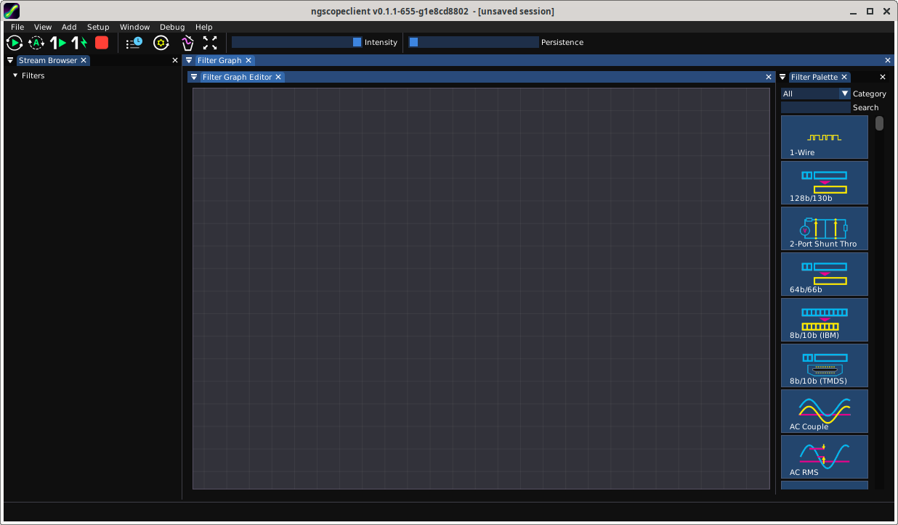

We test ngscopeclient on the following platforms:
The majority of development is performed on Linux operating systems (primarily Debian) so this is the most well tested platform.
We do not test on Windows 10, however there are no known incompatibilities.
Any 64-bit Intel, AMD, or ARM processor (including Apple Silicon) should be able to run ngscopeclient.
If AVX2 and/or AVX512F support is present ngscopeclient will use special optimized versions of some signal processing functions, however neither instruction set is required.
We don’t actively test on 32-bit platforms due to the significant RAM requirement of typical workloads, but we won’t stop you from trying and would love to hear if you get it working.
A mouse with scroll wheel, or touchpad with scroll gesture support, is mandatory to enable full use of the UI. We may explore alternative input methods for some UI elements in the future.
Any GPU with Vulkan support should be able to run ngscopeclient, however Vulkan 1.2 will deliver better performance. The minimum supported GPUs are:
On Linux, if you do not have a supported GPU you can still use ngscopeclient with software rendering via llvmpipe, however performance is likely to be poor.
Note that many virtual machine graphics stacks (e.g. VMWare) do not provide Vulkan unless a PCIe passthrough GPU is being used.
The minimum RAM requirement to launch ngscopeclient is relatively small; however, actual memory consumption is heavily dependent on workload and can easily reach into the tens of gigabytes when doing complex analysis on many channels with deep history.
Typical RAM consumption examples:
Large amounts of GPU RAM are required for working with deep waveforms, especially if you intend to perform complex analysis on them. Analog waveforms are stored in 32-bit floating point format internally, so a single 256 megapoint waveform will consume 1GB of GPU memory. Intermediate results in multi-step filter pipelines require GPU memory as well, even if not displayed.
The maximum supported waveform size depends on your Vulkan implementation but is typically \(2^{32}\) bytes (4 GB) assuming sufficient video memory is available. This translates to one gigapoint analog or four gigapoints digital.
ngscopeclient uses the libscopehal library to communicate with instruments, so any libscopehal-compatible hardware should work with ngscopeclient. See the Oscilloscope Drivers section for more details on which hardware is supported and how to configure specific drivers.
Prebuilt binary packages are available for some of our supported platforms.
The latest released binaries can be downloaded from GitHub at https://github.com/ngscopeclient/scopehal-apps/releases.
If you are feeling adventurous and want to try bleeding-edge code, or are testing a fix at a developer’s request, packages for the officially supported platforms are automatically built each commit by our CI pipeline. Unlike release packages, CI builds are not signed so you may encounter security warnings on some platforms when installing them.
Development binaries are available on our CI artifact server at https://dl1.ngscopeclient.org/ngscopeclient-ci/. Artifacts are organized in folders by year and month, then by date/time and commit hash of the specific build. Old builds are periodically deleted to recover disk space; the artifact server usually has a month or so worth of historical binaries depending on the pace of development.
ngscopeclient can be compiled on Linux, macOS, and Windows. While the compilation process is generally similar, various steps differ among platform and distro.
Basic requirements:
sudo apt-get install build-essential git cmake pkgconf libgtk-3-dev libsigc++-2.0-dev libyaml-cpp-dev catch2 libglfw3-dev curl xz-utils libhidapi-dev lsb-release dpkg-dev file
On Debian bookworm and later, you can use system-provided Vulkan packages. Skip this if you choose to use the upstream Vulkan SDK instead:
sudo apt-get install libvulkan-dev glslang-dev glslang-tools spirv-tools glslc
To build the LXI component (needed if you have LXI- or VXI-11-based instruments):
sudo apt install liblxi-dev libtirpc-dev
To build the documentation, you will also need LaTeX packages:
sudo apt install texlive texlive-fonts-extra texlive-extra-utils
Basic requirements:
sudo apt install build-essential git cmake pkgconf libgtk-3-dev libsigc++-2.0-dev libyaml-cpp-dev catch2 libglfw3-dev curl xz-utils libhidapi-dev lsb-release
On Ubuntu 22.10 and earlier (including 20.04 and 22.04), you will need to use the Vulkan SDK. Instructions for installing this are in a later step. On Ubuntu 23.04 and later, you can instead use system-provided Vulkan packages:
sudo apt-get install libvulkan-dev glslang-dev glslang-tools spirv-tools glslc
To build the LXI component (needed if you have LXI- or VXI-11-based instruments):
sudo apt install liblxi-dev libtirpc-dev
To build the documentation, you will also need LaTeX packages:
sudo apt install texlive texlive-fonts-extra texlive-extra-utils
Basic requirements:
sudo dnf install git gcc g++ cmake make pkgconf gtk3-devel libsigc++30-devel yaml-cpp-devel catch-devel glfw-devel hidapi-devel lsb-release
System-provided Vulkan packages. Skip these if you choose to use the Vulkan SDK instead:
sudo dnf install vulkan-headers vulkan-loader-devel glslang-devel glslc libshaderc-devel spirv-tools-devel
To build the LXI component (needed if you have LXI- or VXI-11-based instruments):
sudo dnf install liblxi-devel libtirpc-devel
To build the documentation, you will also need LaTeX packages:
sudo dnf install texlive texlive-tex4ht texlive-dvipng texlive-make4ht texlive-luaxml texlive-makecell texlive-tocloft texlive-inconsolata texlive-gensymb texlive-newtx texlive-upquote
As Alpine Linux uses musl libc, you will need to use system-provided Vulkan packages, and not the Vulkan SDK.
apk add git gcc g++ cmake make pkgconf gtk+3.0-dev libsigc++-dev yaml-cpp-dev catch2-3 vulkan-loader-dev glslang-dev glslang-static glfw-dev shaderc-dev spirv-tools-dev libhidapi-dev lsb-release-minimal
If you are using an older stable release (such as CentOS 7), you may need to install some dependencies from source.
In many cases, you can install the SDK components from distro-provided repositories, which is covered above. When possible, this is preferred over installing the Vulkan SDK. If you choose not to, or are running a Linux distro that does not provide these packages (for instance, Debian Bullseye, Ubuntu versions prior to 23.04, or other stable distros), the following instructions cover installing and loading the Vulkan SDK.
The latest tested SDK at the time of documentation update is version 1.3.275.0. Newer SDKs are supported, but breaking changes sometimes take place. If you are using a newer SDK and run into problems, please file a bug report.
Alternatively, to use the tarball packaged SDK, download and unpack the tarball. You can manually download the SDK, or do the following:
cd ~ mkdir VulkanSDK cd VulkanSDK curl -LO 'https://vulkan.lunarg.com/sdk/download/1.3.275.0/linux/vulkansdk-linux-x86_64-1.3.275.0.tar.xz' tar xfv vulkansdk-linux-x86_64-1.3.275.0.tar.xz
And then source the ‘setup-env.sh‘ file:
source "$HOME/VulkanSDK/1.3.275.0/setup-env.sh"
When using the tarball-packaged SDK, you will need to source the ‘setup-env.sh‘ file any time you want to compile or run ngscopeclient. For convenience, you can add this to your ‘.bash_profile‘ or equivalent:
echo "source \"$HOME/VulkanSDK/1.3.275.0/setup-env.sh\"" >> ~/.bash_profile
cd ~ git clone --recursive https://github.com/ngscopeclient/scopehal-apps.git cd scopehal-apps mkdir build cd build cmake .. -DCMAKE_BUILD_TYPE=Release -DBUILD_TESTING=OFF make -j4
You will need Xcode (either from the App Store or the Apple developer site); after installing, run it once for it to install system components. This provides gcc, g++, make, and similar required packages.
With Homebrew ( brew.sh):
brew install pkg-config libsigc++ glfw cmake yaml-cpp catch2 libomp hidapi libpng
brew install vulkan-headers vulkan-loader glslang shaderc spirv-tools molten-vk
Download and install the Vulkan SDK.. The latest tested SDK at the time of documentation update is version 1.3.275.0. Newer SDKs are supported, but breaking changes sometimes take place. If you are using a newer SDK and run into problems, please file a bug report.
And then source the ‘setup-env.sh‘ file:
source "$HOME/VulkanSDK/1.3.275.0/setup-env.sh"
When using the SDK, you will need to source the ‘setup-env.sh‘ file any time you want to compile or run ngscopeclient. For convenience, you can add this to your ‘.zprofile‘ or equivalent:
echo "source \"$HOME/VulkanSDK/1.3.275.0/setup-env.sh\"" >> ~/.zprofile
cd ~ git clone --recursive https://github.com/ngscopeclient/scopehal-apps.git cd scopehal-apps mkdir build cd build cmake .. -DCMAKE_BUILD_TYPE=Release -DCMAKE_PREFIX_PATH="$(brew --prefix);$(brew --prefix)/opt/libomp" make -j4
On Windows, we make use of the MSYS2 development environment, which gives us access to the MingGW-w64 toolchain. Since this toolchain allows ngscopeclient to be compiled as a native Windows application, the project might be run outside of MSYS2.
The following steps can be done in any MSYS-provided shell.
pacman -S git wget mingw-w64-ucrt-x86_64-cmake mingw-w64-ucrt-x86_64-toolchain
pacman -S mingw-w64-ucrt-x86_64-libsigc++ mingw-w64-ucrt-x86_64-yaml-cpp mingw-w64-ucrt-x86_64-glfw mingw-w64-ucrt-x86_64-catch mingw-w64-ucrt-x86_64-hidapi mingw-w64-ucrt-x86_64-libpng
pacman -S mingw-w64-ucrt-x86_64-vulkan-headers mingw-w64-ucrt-x86_64-vulkan-loader mingw-w64-ucrt-x86_64-shaderc mingw-w64-ucrt-x86_64-glslang mingw-w64-ucrt-x86_64-spirv-tools
pacman -S mingw-w64-ucrt-x86_64-fftw
cd ~ git clone --recursive https://github.com/ngscopeclient/scopehal-apps
All following steps are to be done in a UCRT64 shell.
cd scopehal-apps mkdir build cd build cmake .. ninja -j4
Download and install WiX Toolset.
You can download it from https://github.com/wixtoolset/wix3/releases
If you install it to the path "C:\Program Files (x86)\WiX Toolset v3.14" run the following cmake
command instead of cmake .. mentioned earlier:
cmake .. -DWIXPATH="C:\Program Files (x86)\WiX Toolset v3.14\bin"
ninja compilation will now generate the installer after binaries.
Building scopehal and scopehal-apps with MSYS2 will install required dependencies in MSYS2’s libpath, so locally compiled builds of ngscopeclient have to be launched from a MSYS2 shell (use MSI installer to generate a standalone package including these libraries).
The binaries can be found in the build directory, such as ngscopeclient in $HOME/scopehal-apps/build/src/ngscopeclient.
Use the following commands to run ngscopeclient:
cd src/ngscopeclient/ ./ngscopeclient.exe
Or with some debug options:
./ngscopeclient.exe --debug --trace SCPISocketTransport
When running ngscopeclient with no arguments, an empty session (Fig. 3.1) is created. To perform useful work, you can:

Session files
If you wish to resume a prior session, pass the path to a session file saved from the graphical
interface as the sole non-option argument.
The file name must end in .scopesession.
Instrument connection strings
When starting a new session, you may provide one or more instrument connection strings as
arguments, which will be added to the session.
Connection strings are not accepted when resuming an existing session.
ngscopeclient takes standard liblogtools arguments for controlling console debug verbosity.
If no verbosity level is specified, the default is “notice" (3). (We suggest using --debug for routine use until the v1.0 release to aid in troubleshooting.)